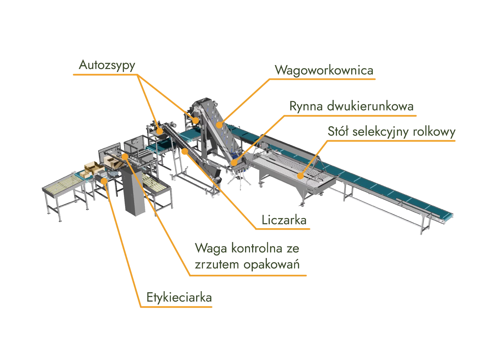
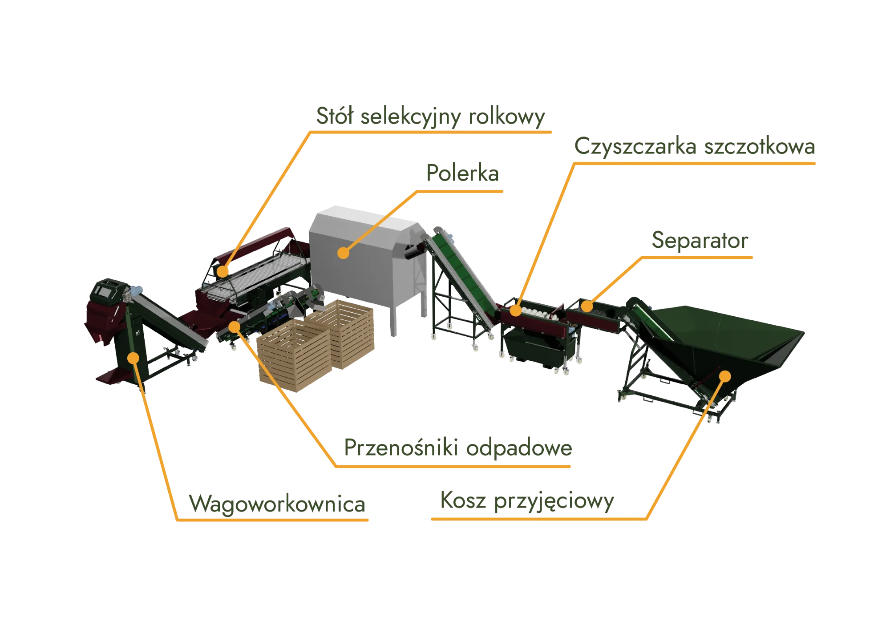
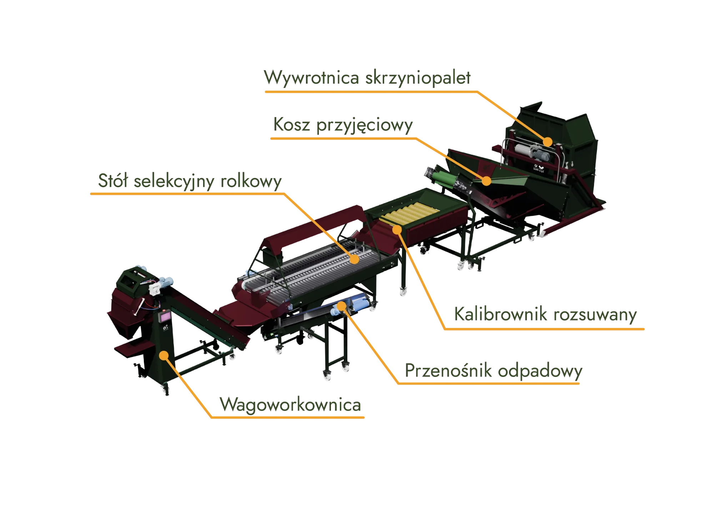
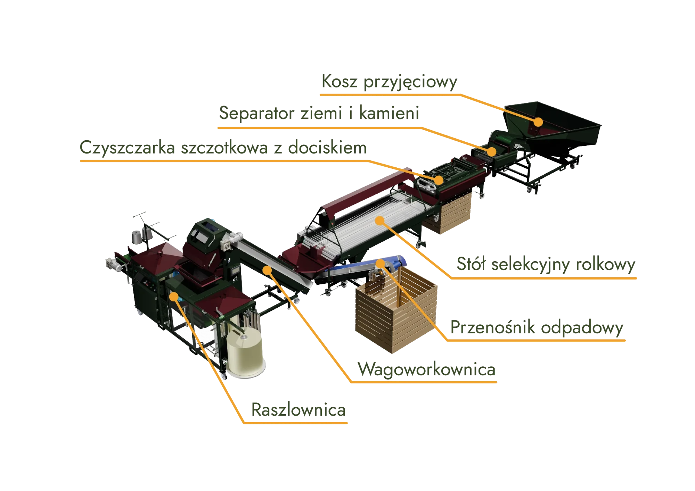
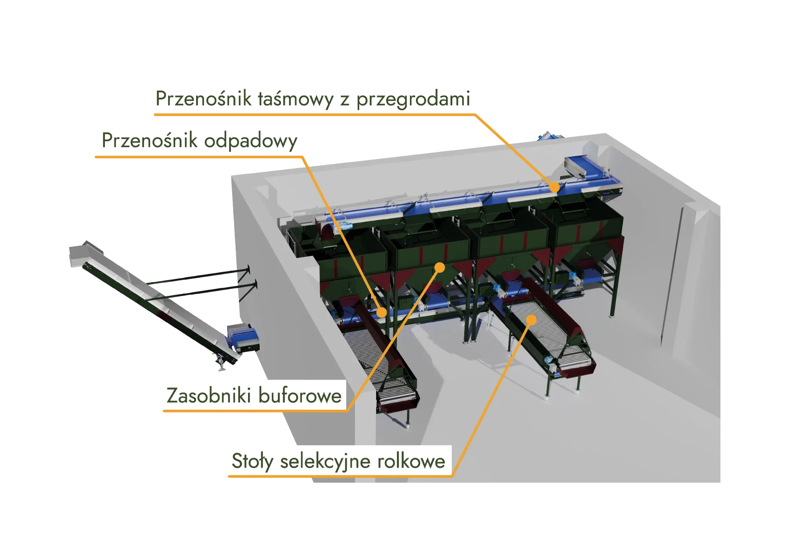
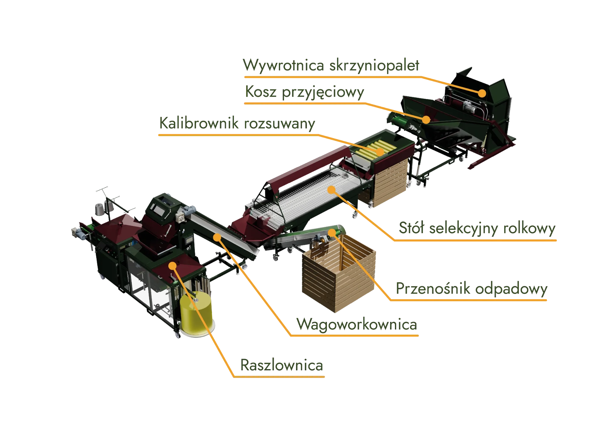
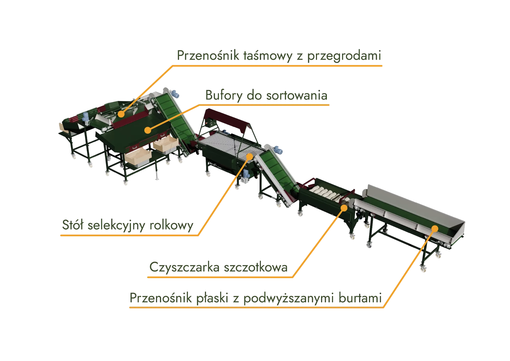

Dziesięć etapów, z których składamy każdą linię
Każdy etap to nasze własne maszyny. Wybierasz tylko te, których potrzebuje Twój surowiec i hala.
Od gospodarstwa po zakład przetwórczy
Nasze linie kierujemy zarówno do dużych przedsiębiorstw, jak i do mniejszych oraz średnich gospodarstw, które chcą zoptymalizować produkcję. Modułowa budowa i elastyczne opcje konfiguracji pozwalają dopasować linię do każdej skali produkcyjnej.
Dla mniejszych firm to szansa na przyspieszenie procesów bez dużych nakładów inwestycyjnych, dla średnich gospodarstw — możliwość zwiększenia efektywności i podniesienia jakości produktów. Linię można rozbudowywać wraz ze wzrostem produkcji.
- 01Analiza surowca, wydajności i układu hali
- 02Projekt linii i rzut rozmieszczenia maszyn
- 03Produkcja maszyn w Środzie Wielkopolskiej
- 04Wykonanie INOX i automatyka na życzenie
- 05Montaż, uruchomienie i szkolenie obsługi
- 06Serwis i rozbudowa o kolejne moduły
Siedem propozycji, z których składamy linię pod Twój surowiec

Zaawansowana linia do liczenia i pakowania cytrusów INOX
Linia do automatycznego liczenia i pakowania cytrusów, zapewniająca wysoką wydajność i precyzję. Wykonanie ze stali nierdzewnej gwarantuje trwałość i łatwe utrzymanie higieny, a modułowa konstrukcja pozwala dopasować układ do różnych potrzeb produkcyjnych.
- Liczarkaprecyzyjnie liczy cytrusy na sztuki przed pakowaniem
- Wagoworkownicaważy i pakuje cytrusy do worków
- Autozsypyautomatycznie transportują owoce między etapami
- Stół selekcyjny rolkowyręczne sortowanie owoców przed pakowaniem
- Rynna dwukierunkowakieruje produkt do odpowiednich sekcji linii
- Waga kontrolnasprawdza wagę opakowań i odrzuca niezgodne
- Etykieciarkaautomatycznie nakleja etykiety

Linia do oczyszczania, mycia i pakowania warzyw
Kompleksowa linia do przygotowania warzyw do sprzedaży: oczyszczanie, mycie, sortowanie i pakowanie w jednym ciągu. Automatyzuje procesy i zwiększa wydajność produkcji.
- Kosz przyjęciowyprzyjęcie surowca i równomierne podanie na linię
- Separator ziemi i kamieniusuwa większe zanieczyszczenia przed myciem
- Czyszczarka szczotkowadokładnie myje warzywa z resztek ziemi
- Przenośnik odpadowywyprowadza odpady poza linię
- Stół selekcyjny rolkowyręczne sortowanie warzyw
- Polerkanadaje połysk i usuwa resztki zabrudzeń
- Wagoworkownicapakuje do worków zgodnie z zadanym ciężarem

Linia do kalibracji i ważenia
Linia do precyzyjnego sortowania warzyw według rozmiaru i ważenia przed pakowaniem. Dla producentów, którzy oczekują wysokiej dokładności i efektywności.
- Wywrotnica skrzyniopaletrozładunek skrzyniopalet na linię
- Kalibrownik rozsuwanysortuje warzywa według rozmiaru
- Stół selekcyjny rolkowyręczne sortowanie produktów
- Przenośnik odpadowytransportuje odpady poza linię
- Wagoworkownicaważy i pakuje do worków w zadanym zakresie wagowym

Linia do czyszczenia i pakowania
Linia skoncentrowana na dokładnym czyszczeniu produktów i ich efektywnym pakowaniu. Modułowa konstrukcja pozwala dostosować ją do różnych rodzajów warzyw.
- Separator ziemi i kamienieliminuje większe zanieczyszczenia przed obróbką
- Czyszczarka szczotkowa z dociskiemusuwa zabrudzenia szczotkami z systemem docisku
- Stół selekcyjny rolkowyręczna kontrola jakości przed pakowaniem
- Przenośnik odpadowytransportuje odpady poza linię
- Raszlownicapakuje warzywa do worków i zaszywa je

Linia do buforowania i ręcznej selekcji cebuli
Linia zaprojektowana do buforowania i ręcznej selekcji cebuli. Zapewnia wygodę pracy obsługi i płynność procesu produkcyjnego.
- Zasobniki buforowemagazynują cebulę przed sortowaniem
- Przenośnik taśmowy z przegrodamitransport i sortowanie cebuli
- Stoły selekcyjne rolkoweręczne sortowanie przed pakowaniem
- Przenośnik odpadowyodprowadza odpady poza linię

Linia do kalibrowania i pakowania
Dla producentów oczekujących precyzyjnego kalibrowania i pakowania warzyw. Sortuje produkty według rozmiaru i pakuje zgodnie z zadanymi normami.
- Wywrotnica skrzyniopaletrozładunek surowca na linię
- Kalibrownik rozsuwanydokładnie sortuje według rozmiaru
- Stół selekcyjny rolkowyręczna selekcja produktów
- Przenośnik odpadowytransportuje odpady poza linię
- Wagoworkownicaważy i przygotowuje do pakowania
- Raszlownicapakuje do worków i zaszywa

Linia do selekcji i ręcznego pakowania batatów
Linia do ręcznego pakowania batatów po wcześniejszej selekcji i czyszczeniu. Zapewnia delikatną obróbkę surowca i efektywność produkcji.
- Bufory do sortowaniamagazynują bataty przed ręcznym pakowaniem
- Przenośnik taśmowy z przegrodamitransport między etapami linii
- Czyszczarka szczotkowausuwa zabrudzenia przed pakowaniem
- Stół selekcyjny rolkowyręczna selekcja i kontrola jakości
- Przenośnik płaski z podwyższanymi burtamitransport do stanowisk pakowania
↳ Rzuty poglądowe. Każdy układ dopasowujemy do hali, surowca i wydajności klienta.
Zaprojektujemy linię pod Twój produkt i halę.
Od pojedynczej maszyny po kompletny ciąg technologiczny — z montażem i uruchomieniem. Opisz surowiec i skalę, a przygotujemy propozycję układu.